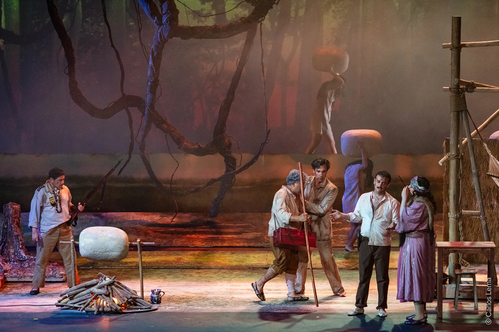
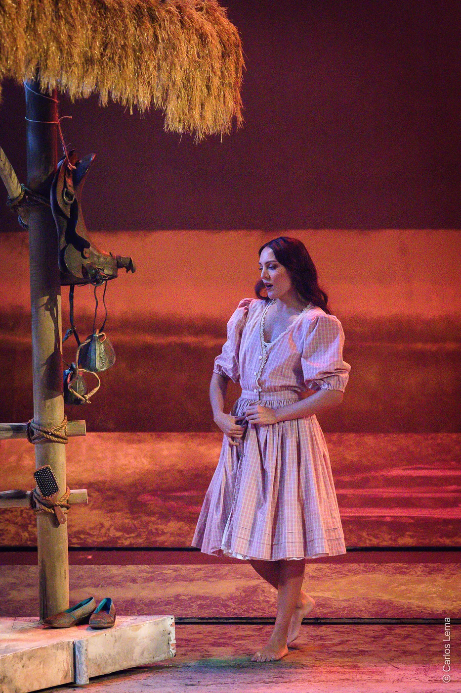

Una obra,
una mirada.
La novela de José Eustasio Rivera se convierte en una ópera latinoamericana de gran formato. El amor, la violencia y la explotación del territorio amazónico atraviesan el recorrido de sus personajes.
El montaje pone en relación la memoria del caucho con preguntas contemporáneas sobre el territorio y el extractivismo. La composición incorpora referencias a ritmos y sonoridades latinoamericanas. Estrenada en el Teatro Colón de Bogotá, la obra viajó al Festival Amazonas de Ópera en Manaos.
Ficha artística.
Créditos de la producción documentada. Consulta disponibilidad y requerimientos para una nueva presentación.
- Música y libreto
- João Guilherme Ripper
- Dirección escénica
- Pedro Salazar
- Dirección musical
- Luiz Fernando Malheiro
- Formato y duración
- Ópera en tres actos · 120 minutos
- Escenografía
- Julián Hoyos
- Vestuario
- Sandra Díaz
- Iluminación
- Leonardo Murcia
- Video
- Pablo Castillo
- Coproducción
- La Compañía Estable, Centro Nacional de las Artes Delia Zapata Olivella y Festival Amazonas de Ópera
En imágenes.

Archivo visual de La Compañía Estable.
Llevemos la obra
a tu escenario.
Conversemos sobre disponibilidad, condiciones técnicas y posibilidades de programación o coproducción.
Consultar esta producción ↗